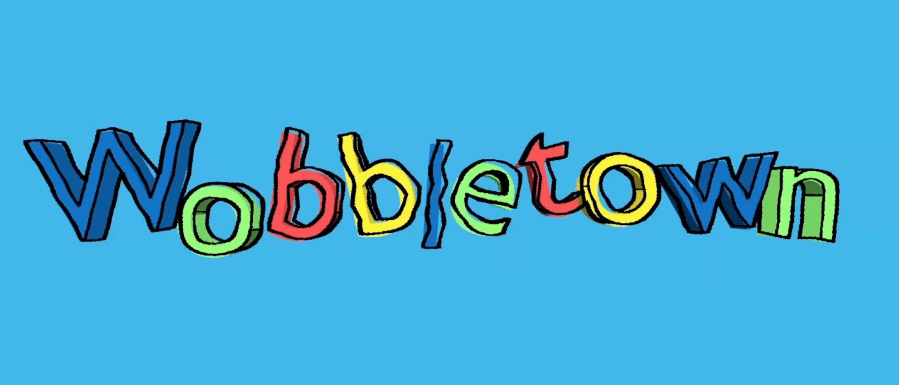
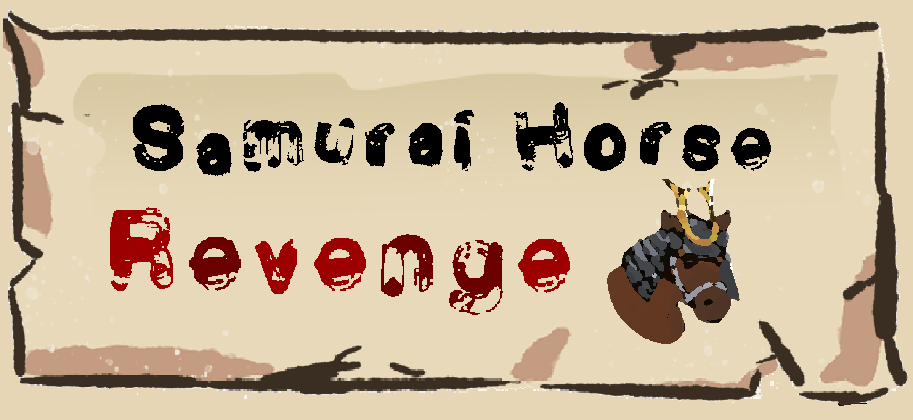
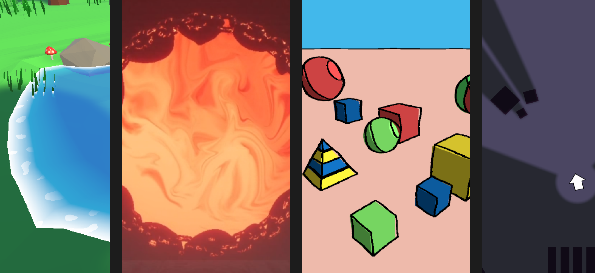

Skills
Here is a list of my technical skills, including game engines/frameworks I have used.
| Languages |
Engines / Frameworks |
Tools |
| C# |
Unity |
Visual Studio |
| C++ |
OpenGL |
Git & Github |
| GLSL |
Vulkan |
Trello |
| Python |
SDL2 |
Blender |
| HTML & CSS |
GLFW |
Audacity |
| JavaScript |
MonoGame |
LaTeX |
About Me
I have around 3 years of experience making games; at first as a hobby, and now in fulltime education. I am currently a student at Falmouth University, Cornwall, UK completing the second year of my course; BSc. Computing for Games.
I have so far worked on games from a variety of genres, including both 2D and 3D projects. I enjoy games with strong, coherent styles which achieve powerful immersion and provide meaningful experiences. Because of this, I have a particular interest in technical art including shaders and other visual effects.
Working within Falmouth University's Games Academy has also taught me the importance of excellent teamworking skills. I love to work with other passionate devlelopers, and enjoy bridging the gaps between specialisms; implementing art, animation and sound in engine to create a well rounded, complete experience!
When I'm not working on university or personal projects or playing games myself, I like to make the most of the Cornish outdoors! I love being active in nature, including walking, climbing, and sea swimming.
Game Projects
Here are a few examples of games I've worked on over the past few years, including a student game, a global game jam entry, and two personal projects.

A wobbly cartoon diorama!
Wobbletown is a simple diorama that I made to practice using Shaders and Unity's Scriptable Render Pipeline. You can find a link on the project page to download and play Wobbletown on itch.io!

A hack and slash last stand for Samurai Horse kind!
Samurai Horse Revenge is a fast paced, hack and slash created in ~48 hours for the Global Game Jam 2024. You can find a link on the project page to download and play Samurai Horse Revenge on itch.io!
Technical Art
This section is work in progress.

Shaders